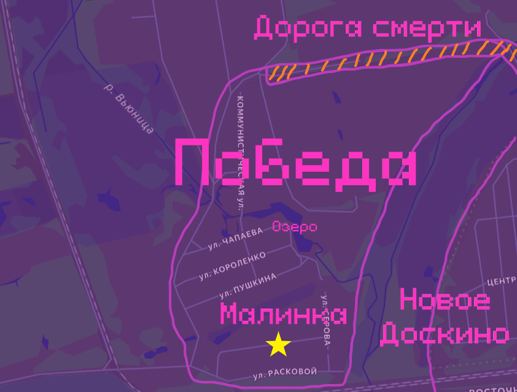
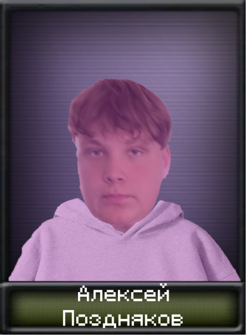
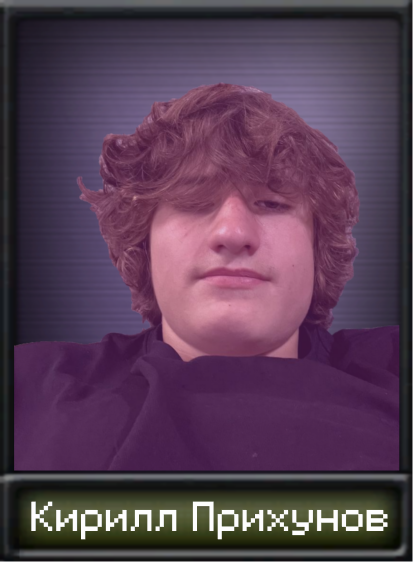
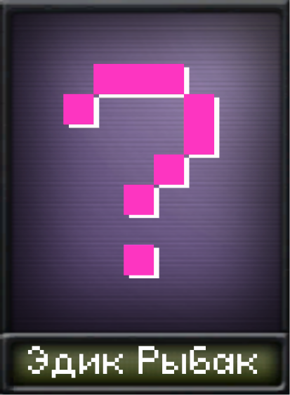

Основной сюжет

Победа - посёлок рыбаков. Не удивительно, когда тебя окружают водоёмы, сложно не стать рыбаком. Промышленности вообще нет. Оружие покупается засчёт выручки от рыбы. Находится между Новым Доскиным и Ивановкой. От Нового Доскина отделяет болото Вьюницы. Есть сухопутная дорога, которая соединяет Победу и Новое Доскино на севере. Но это не дорога, а полоса препятствий. Нормально пройти там можно только зимой, если сугробы будут небольшие.
Также на Победе есть проблемы с алкоголизмом. Самый яркий пример Витёк и Верка Солодовы. Нужно бороться с пьянством, но принесёт ли это положительный эффект? Все мы прекрасно помним антиалкогольную компанию Горбачева 1985 года. Алкоголь не однозначная вещь.


Управленцем Победы сделали Лёху Позднякова. Просто он поймал больше карасей, чем Эдик. Но не всё так просто. На Победе действует тайное двоевластие. Эдик специально поймал меньше карасей, чтобы отвести от себя взгляд. Эдик тайно ведёт переговоры с Новым Доскиным, спонсирует мост через Вьюницу, получает оружие. Взамен Новое Доскино требует подчинения. Пока Лёха со своим помощником Кириллом Прихуновым ведёт Победу к интеграции с Ивановкой, Эдик ведёт Победу к интеграции с Новым Доскиным. Именно агенты Эдика проводят рейды против Ивановки, чтобы Ивановка не видела ничего хорошего в интеграции с Победой.

Гражданская война неизбежна
Сюжет разделяется
1) Лёха побеждает в Победской войне
Одолев армию Эдика, Лёха начинает переговоры с Ивановкой. Если в Ивановке Ярик, то интеграция произойдёт. Если интеграции не будет, то Новое Доскино вторгнется на Победу. У Победы нет шансов сражаться против Нового Доскина, но если Победа будет долго обороняться, то Новое Доскино вскоре отступит и Победа останется независимой.
2) Эдик побеждает в Победской войне
Одолев армию Лёхи, Эдик начинает окончательную интеграцию с Новым Доскиным. Достраивается мост через Вьюницу. Расширяется рыболовля и её продажа по ж/д. Теперь весь север принадлежит Новому Доскину. Рейды на Ивановку и обстрел северной промышленности Северо-Восточной Горбатовки усиливаются.
На главную